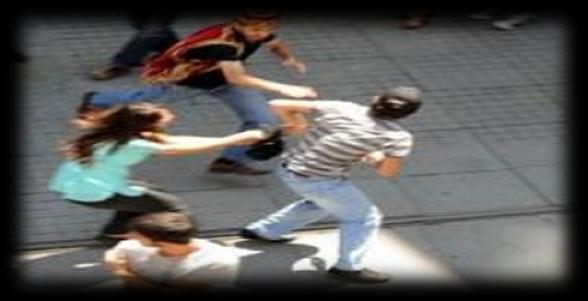

Kapkaç, yaya veya araçla (oto, motosiklet, bisiklet) işlenebilmektedir.
36

a. Oto ile Kapkaç
Çalıntı veya sahte plakalı otolarla, araçtan bir kişinin sarkarak, tenha sokak veya caddelerde bulunan özellikle bayan veya yaşlıların çanta veya cep telefonlarının çekilerek üzerlerinden alınmasıdır.
b. Motorlu Kapkaç
Çalıntı veya plakasız motorlarla, ara sokak veya tenha caddelerde bulunan özellikle bayan veya yaşlıların çanta veya cep telefonlarının çekilerek üzerlerinden alınmasıdır.
c. Yaya Kapkaç
Kişilere arkalarından yürüyerek yaklaşıp çanta, cep telefonu veya ziynet eşyalarının aniden çekilerek alınmasıdır.
d. Toplu Taşıma Araçlarında Kapkaç
Toplu taşıma aracının hareket ettiği sırada, kapı kapanmak üzereyken araca binen kişinin çantasının çekilerek alınması veya failin aracın içerisindeyken aracın kalkacağı sırada dışarıda bekleyen kişinin çantasının çekilerek alınmasıdır.